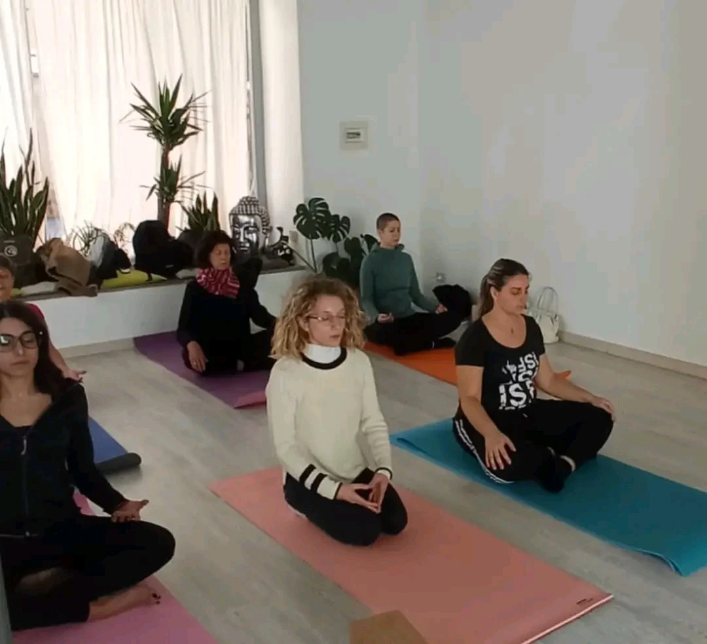
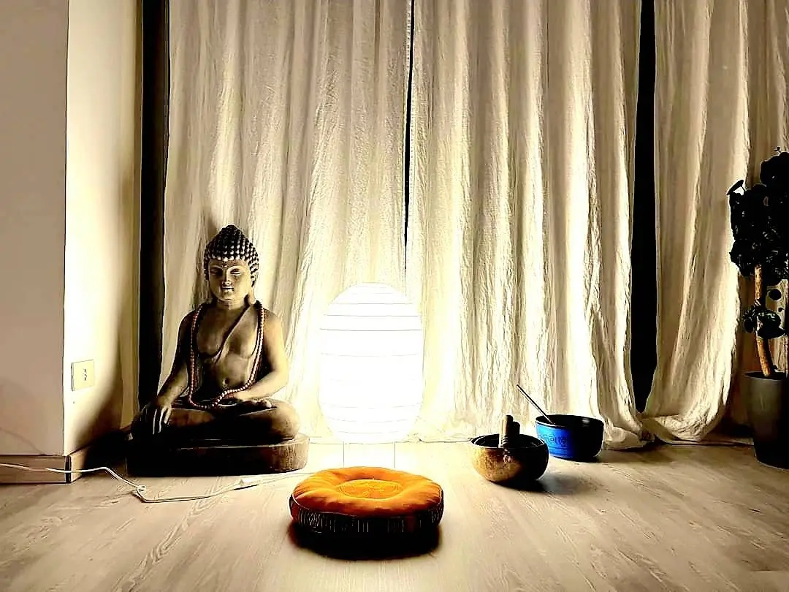

Preparazione
Una posizione comoda e qualche movimento dolce preparano all’ascolto.

Sessioni dedicate all’ascolto interiore, alle tecniche di respirazione e alla qualità dell’attenzione.
Chiedi informazioniLa pratica esplora il respiro consapevole, il pranayama e la meditazione attraverso indicazioni semplici e progressive.
Non serve svuotare la mente: si impara piuttosto a riconoscere pensieri, sensazioni e ritmo del respiro senza doverli giudicare.

Il respiro è sempre qui. La pratica è tornare ad ascoltarlo.
Ogni incontro propone strumenti concreti da conoscere in sala e poi ritrovare nella quotidianità.
Una posizione comoda e qualche movimento dolce preparano all’ascolto.
Le tecniche vengono spiegate con gradualità, rispettando il ritmo individuale.
Un tempo guidato di presenza conclude l’esperienza.
A chi desidera avvicinarsi alla meditazione o approfondire il rapporto con il respiro. Non è richiesta esperienza precedente.

Gabriella integra pratiche antiche e strumenti moderni in un percorso di consapevolezza che unisce corpo, mente ed emozioni.
Nel calendario attuale non è indicato un orario fisso.
Scrivici su WhatsApp